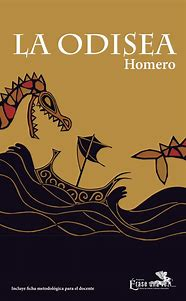

HISTORIA
Sueños Y Letras es una libreria fundada en 2003 por Juan Martinez un amante de los libros que queria crear un refugio para lectores comenzo como una pequeña libreria muy acogedora y de a poco fue creciendo hasta convertirse un destino impresindible para los amantes de la lectura,Te invitamos a visitar “Letras y Sueños” y encontrar tu próximo libro en nuestro acogedor rincón literario"
MISION
Nuestra misión es inspirar a cada lector a descubrir nuevos mundos a través de las páginas de un libro. En Librería Sueños y Letras, nos esforzamos por ofrecer una experiencia única, donde cada visitante encuentre historias que enciendan su imaginación
Trabajamos para ser un espacio acogedor que fomente la lectura como una herramienta de crecimiento personal y cultural para todas las edades."
VISION
Ser reconocidos como el principal destino literario para lectores de todas las edades, promoviendo la cultura del libro y la lectura como pilares del desarrollo personal y social.
Aspiramos a ser un espacio inclusivo y dinámico, donde cada visita sea una oportunidad para descubrir, aprender y conectar a través de historias que trascienden el tiempo y las fronteras.